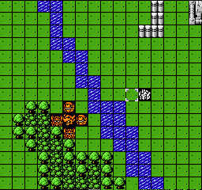
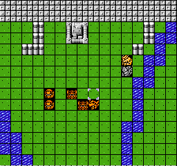
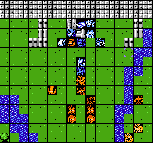

打完后拉米亚站在这个位置，温德鲁攻击触发干扰，多SL吧。
这时候速度快，输出高的几个冲进人堆吧，有点玩OG2的感觉了。不过值得注意的是，一般情况下温德鲁是第一个出手的，不过如果你的机体冲的太深，某一个小兵会先出手，原因不详。
第九关
这关存在隐藏，关系拉米亚是拿拔刀机还是ASH救世主。详见16楼。
这关是除了第一关之外一直打过来最轻松的一关，除了SL之外。
初始站位如下图


拉米亚就站着不动，阿拉德要站在泽奥拉移动后可攻击的位置进行反击，两次反击+拉米亚强攻+阿拉德主动进攻，正好打死，不要吝啬拉米亚的精神，该闪避闪避。
